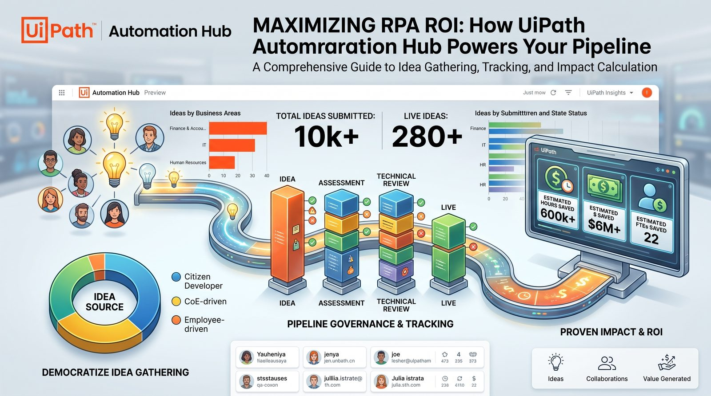

Automation Hub: the pipeline before the pipeline
Automation Hub is where an automation programme decides what to build — and later proves whether it was worth it. Here is how the pipeline works, how to drive it from the uip CLI, and how to keep the numbers honest.

What it actually is
Automation Hub is the system of record for your automation pipeline. Ideas come in, get assessed, reviewed, built and measured — and every one of those decisions is written down in one place instead of a spreadsheet only the CoE lead understands.
It sits on the Discover layer for a reason: it decides what gets built. Get the front door wrong and the best developers in the world will very efficiently automate the wrong things.
-
Source
Citizen developers
People closest to the work, submitting what annoys them most. High signal on pain, low signal on feasibility.
-
Source
CoE-driven
Top-down candidates from the automation team, usually tied to a strategic objective or a cost target.
-
Source
Employee-driven
Broad intake campaigns. Volume is the point — and also the risk, if nobody triages.
-
Source
Discovery tools
Task Mining, Process Mining and the Automation Discovery Skill pushing evidence-backed candidates straight in.
The pipeline, stage by stage
Four stages, four different owners. Click through — the useful question at each one is who is allowed to change the numbers.
Idea — is it worth a closer look?
Anyone can submit: citizen developers, the CoE, or a discovery tool pushing candidates in. Nothing is scored yet. The only decision here is whether the idea deserves an assessment.
Assessment — benefit vs ease
The process owner and CoE put numbers on it: volume, time per case, error rates, and how hard it looks. This is where inflated estimates usually sneak in, so write down where each number came from.
Technical review — can we actually build it?
An architect or senior developer checks the systems, screen stability, data quality and exceptions. Ease of implementation gets corrected by someone who will actually build it.
Live — did it pay off?
Built, deployed and measured. The benefit that justified the idea is tracked against reality — hours, cost, capacity. This is the stage most programmes forget to close, and it is the one finance cares about.
The skill: uipath-automationhub
uipath-automationhub is the skill that lets a coding agent publish processes to Automation Hub and read them back, using your own cloud login. You don't need an admin-generated OpenAPI token: the agent sees and can do exactly what your Automation Hub role allows, and nothing more.
-
Write
Publish
Create an approved process in Automation Hub as the system of record, along with its PDD and SDD documents, uploaded as files or as links.
- payload · built from the idea-flow schema, fetched live
- typical source · a process Cartographer has documented
-
Read
Get
Fetch a process by id or by search, list its attached documents, and download their file bytes.
- use · dedup and related-idea lookups
- use · pull a published PDD or SDD into your workspace
Hands-on: publish and fetch
Five steps from a clean CLI to a published process with its documents, then back again. The skill picks its own transport, so most of what you type is a prompt.
-
Install the skill
~1 minIt's part of the UiPath skills catalog. If you followed the Automation Discovery walkthrough you already have it. Just update to make sure it's current.
Terminaluip skills install --agent claude# confirm it's thereuip skills search uipath-automationhub --output json# or invoke it directly from your agent/uipath-automationhub -
Preflight: CLI or raw API?
automaticStep 0 of the skill. It runs uip ah --help once per session. If that succeeds, every flow goes through uip ah commands and uip handles auth. If it fails with unknown command 'ah' (an older CLI), it switches to the raw Open API flows. It never mixes the two in one run.
Terminaluip ah --help✓ succeeds → CLI flows (preferred)✗ unknown command 'ah' → raw Open API flowsCheckThe domain rules (required fields, wrapping rules, document types) are identical on both paths. Only the transport changes.
-
Authenticate
~1 minOn the CLI path, log in once and you're done. On the raw-API path the skill finds a cloud token in a fixed order: runtime env-auth first (how Delegate provides it), then your uip login session in ~/.uipath/.auth, and only as a last resort a token you paste in.
Terminal — authenticateuip login# browser opens → choose organisation + tenantuip login statusuip login tenant set <tenant-name>Raw-API path — what the skill looks for# 1 · runtime env-auth (preferred, how Delegate supplies it)UIPATH_CLI_ENABLE_ENV_AUTH=trueUIPATH_CLI_AUTH_TOKEN UIPATH_CLI_ORGANIZATION_NAME UIPATH_CLI_TENANT_NAME# 2 · logged-in session~/.uipath/.auth → accessToken · baseUrl · organizationName · tenantName# 3 · last resort: user pastes token + org + tenant slugs401?Cloud tokens are short-lived. If you get a 401, run uip login again and retry. Never add admin headers to fix it.
-
Publish a process and its documents
~3 minThe publish flow fetches the idea-flow schema from your tenant, collects every required field before writing anything, creates the process, attaches the PDD and SDD, then reads the record back to confirm it landed.
Claude Code — promptPublish 'AP invoice exception triage' to Automation Hub.Attach ./design/ap-exceptions-pdd.docx and the SDD,then give me the link once you've verified it.Agent output (illustrative)● Preflight uip ah available → CLI flow● Schema idea-flow fields fetched live · 1 missing → asked✓ Process created✓ PDD + SDD attached✓ Re-read and verified → link returnedWhy it mattersBecause the schema is fetched live, the flow adapts on its own if your CoE changes the idea-flow fields.
-
Fetch it back
~1 minThe get flow is the reverse: find the process by id or search, list its documents, download the bytes into your workspace. Use it before you publish, to check for duplicates, or when a build team needs the SDD.
Claude Code — promptIs there already an idea like 'vendor onboarding checks'in Automation Hub? If so, download its PDD into ./design.
Under the hood: the raw Open API
When the CLI doesn't have uip ah, the skill calls the Automation Hub Open API directly. It helps to know the rules it follows, because they're the same mistakes people make when they script this by hand.
-
Gateway and headers
every requestOne gateway URL for everything. The platform injects tenant routing from the org and tenant path segments, which are the two segments after the host in your Automation Hub URL.
Open API — request shape# gateway{baseUrl}/{org}/{tenant}/automationhub_/api/v1/openapi# alwaysAuthorization: Bearer <cloud access token>Content-Type: application/json # on POSTs# NEVER — routes to the admin-token path, 401s a cloud tokenx-ah-openapi-authx-ah-openapi-app-keyThe #1 mistakeAdding x-ah-openapi-auth to fix a 401. It makes things worse: that header switches you to the admin-token path, which rejects your cloud token every time.
Back-of-envelope: is it worth it?
Before an idea earns an assessment, run the simplest possible sum. If it doesn't survive this, it won't survive a CFO.
Where it breaks
Three failure modes show up again and again. Idea graveyards: intake campaigns that collect hundreds of ideas nobody triages, so submitters stop submitting. Score inflation: assessment numbers written by the person who wants the automation, with no source attached. And no close-out: automations go live, nobody updates the realised benefit, and the pipeline can't prove its own value at budget time.
The fix is the same for all three — give every stage a named owner and make the Live stage mandatory, not optional.
Watch the episode
 Play on YouTube
Play on YouTube
Prefer audio? Listen on Spotify